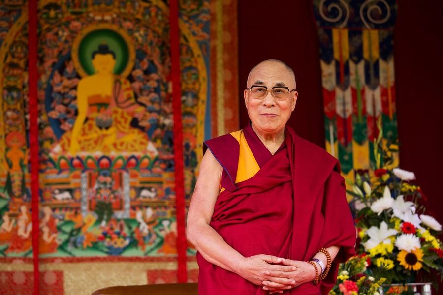
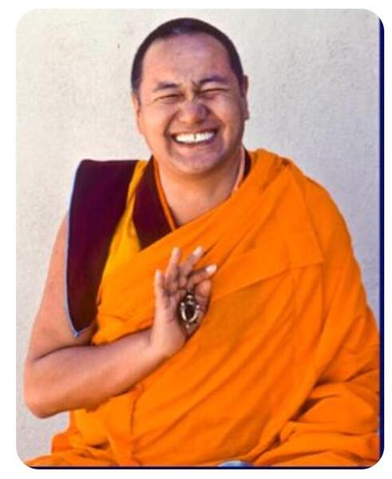
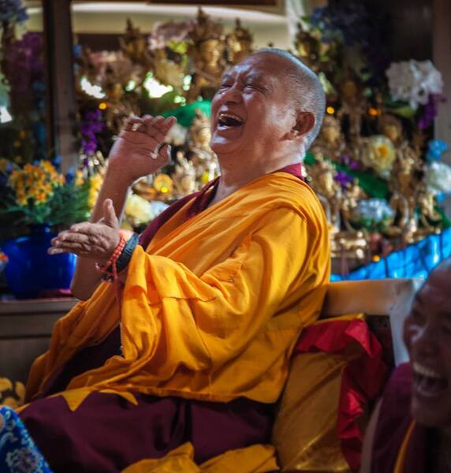

His Holiness the 14th Dalai Lama, Tenzin Gyatso, describes himself as a simple Buddhist monk. He is the spiritual leader of Tibet. He was born on 6 July 1935, to a farming family, in a small hamlet located in Taktser, Amdo, northeastern Tibet. At the very young age of two, the child who was named Lhamo Dhondup at that time, was recognized as the reincarnation of the previous 13th Dalai Lama, Thubten Gyatso.
The Dalai Lamas are believed to be manifestations of Avalokiteshvara or Chenrezig, the Bodhisattva of Compassion and the patron saint of Tibet. Bodhisattvas are believed to be enlightened beings who have postponed their own nirvana and chosen to take rebirth in order to serve humanity.
His Holiness began his monastic education at the age of six. At twenty three he passed his final examination with honours and was awarded the Geshe Lharampa degree, equivalent to a doctorate of Buddhist philosophy. His Holiness describes himself as a simple Buddhist monk.In 1959, with the brutal suppression of the Tibetan national uprising by the Chinese, His Holiness was forced to escape to India. Since then he has been living in Dharamsala, the seat of the Tibetan Government in exile.His Holiness has received over 84 awards, honorary doctorates and prizes in recognition of his message of peace, non-violence, inter-religious understanding, universal responsibility and compassion.In 1989 he was awarded the Nobel Peace Prize for his non-violent struggle for the liberation of Tibet. In October 2007, he was awarded the Congressional Gold Medal by the Government of the United States of America.

Founder of Tushita Meditation Centre and the FPMT – Lama Thubten Yeshe was born in Tibet in 1935. At the age of six, he entered Sera Monastic University in Tibet where he studied until 1959, when as Lama Yeshe himself has said, “In that year the Chinese kindly told us that it was time to leave Tibet and meet the outside world.” Lama Thubten Yeshe and Lama Thubten Zopa Rinpoche, together as teacher and disciple since their exile in India, met their first Western students in 1965. By 1971 they settled at Kopan, a small hamlet near Kathmandu in Nepal.
In 1974, the Lamas began touring and teaching in the West, which would eventually result in The Foundation for the Preservation of the Mahayana Tradition (FPMT). Lama Yeshe died in 1984, his reincarnation Lama Tenzin Osel Rinpoche was born to Spanish parents in 1985. You can read more about Osel here.
“In my mind, one of the beauties of Buddhism is that it offers us a practical training for our mind. It does not say, ‘Bodhicitta is fantastic because Buddha said so!’ Instead, it gives us the methods for developing such an attitude and we can then see for ourselves whether it works or not, whether it is fantastic or not.”
-Lama Thubten Yeshe

Lama Zopa Rinpoche is a Tibetan Buddhist scholar and meditator who for 30 years has overseen the spiritual activities of the extensive worldwide network of centers, projects and services that form the Foundation for the Preservation of the Mahayana Tradition(FPMT), which he founded with Lama Thubten Yeshe.
Rinpoche’s vision is vast and includes the proliferation of many charitable and beneficial activities. Among many projects dear to Rinpoche’s heart are the two Maitreya Projects: under Rinpoche’s guidance, FPMT plans to build two large statues of the future Buddha, Maitreya, in Bodhgaya and Kushinagar in India;The Sera Je Food Fund, which offers three vegetarian meals a day to all 2,500 monks studying at Sera Je Monastery in south India;Animal Liberation events around the world, at which creatures, big and small, are freed from immediate harm or blessed every year– the total number of animals liberated to date (by Lama Zopa Rinpoche or those inspired by him) is over 200,000,000 and counting!
Rinpoche is also utterly dedicated to fulfilling the wishes of His Holiness the Dalai Lama wherever and whenever possible.
Rinpoche’s kindness is legendary. More details of Rinpoche’s ongoing philanthropy can be followed through the Lama Zopa Rinpoche Bodhichitta Fund News.
Born in the Mount Everest region of Thami in 1946, Rinpoche was recognized soon afterwards by His Holiness Tulshig Rinpoche and five other lamas as the reincarnation of the great yogi Kunsang Yeshe. Rinpoche was taken under the care of FPMT’s founder Lama Thubten Yeshe, soon after leaving Tibet, in Buxa Duar, India, in the early 1960’s. Rinpoche was with Lama Yeshe until 1984 when Lama Yeshe passed away and Lama Zopa Rinpoche took over as spiritual director of FPMT.
Closed for the summer till August 15th
The centre is open Monday-Friday from 4.30pm-8.30pm and Sundays from 11am-5pm. The Centre is closed on Saturdays.
All programmes take place at the Centre and are also streamed live on Zoom.